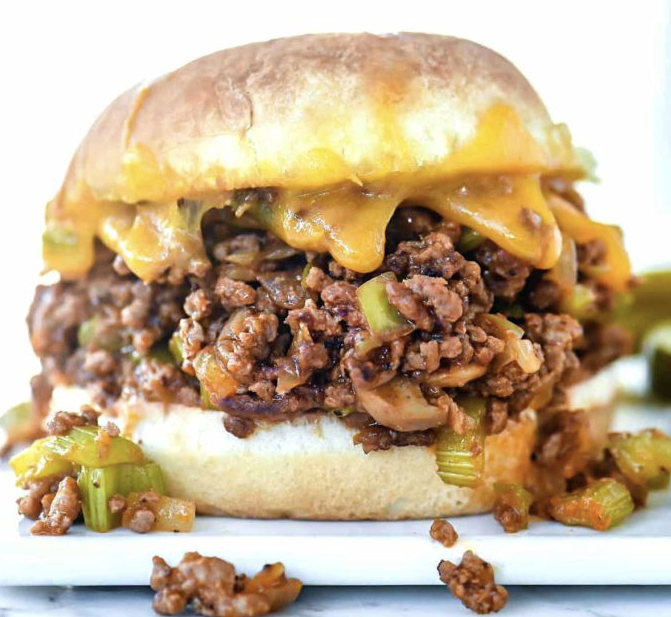

Sloppy Joe Recipe

Descritpion
This is the recipe my mother used for sloppy joes and it always gets compliments!
Ingredients
- 1 Pound lean ground beef
- 1/4 cup chopped onion
- 1/4 cup chopped green bell pepper
- 1/2 teaspoon garlic powder
- 1 teaspoon prepared yellow mustard
- 3/4 cup ketchup
- 3 teaspoons brown sugar
- salt to taste
- ground black pepper to taste
Steps
- In a medium skillet over medium heat, brown the ground beef, onion, and green pepper; drain off liquids.
- Stir in the garlic powder, mustard, ketchup, and brown sugar; mix thoroughly. Reduce heat, and simmer for 30 minutes. Season with salt and pepper.